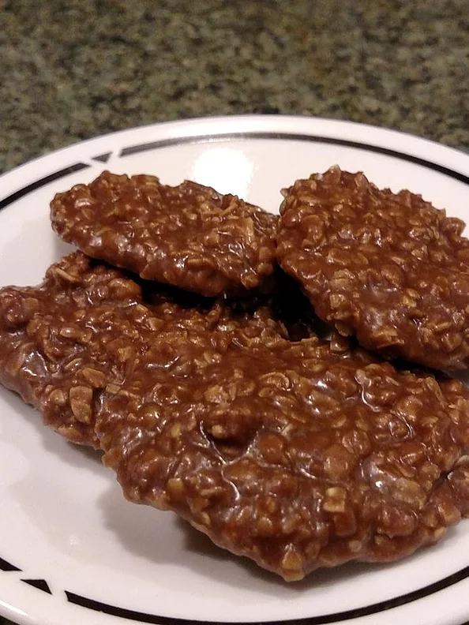

No Bakes

Description
These no bake cookies are some of the best dessert items I have ever tasted. The peanut butter and chocolate mix beautifully, while the oatmeal gives it that hint of grandma's cooking.
Ingredients
- 3 tablespoons unsweetened cocoa powder
- 2 cups white sugar
- 1/2 cup milk
- 1/2 cup butter
- 3 cups quick cooking oats
- 1/2 cup crunchy peanut butter
- 1 tablespoon vanilla extract
Steps
- Heat cocoa, sugar, milk, and butter over medium heat. Boil these verrrrrry slowly (they will turn out better) when they reach the boiling point boil them for no longer than 90-120 seconds.
- Stir together oats, peanut butter and vanilla with a big wooden spoon of Kitchen Aid. Pour the hot mix over the oatmeal mix and drop on wax paper.